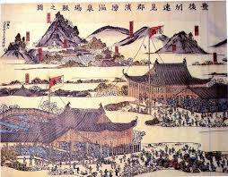
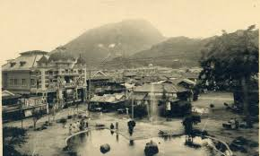
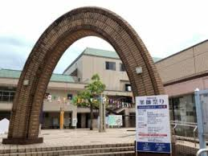

□はじめに
浜脇薬師まつりは、別府市浜脇地区に1400年以上前から伝わる歴史あるお祭りです。 湯治場として栄えてきたこの土地ならではの「祈り」と「感謝」が受け継がれ、毎年夏の終わりには地域全体が温かな活気に包まれます。 提灯が灯る夕暮れの風景はどこか懐かしく、多くの人々を魅了し続けています。
□浜脇薬師まつりの歴史
● 江戸末期（およそ 1800年代前半〜1868年）
江戸末期の浜脇は、別府温泉の中でも特に古くから湯治場として栄え、全国から病を癒すための人々が集まりました。 湯治の合間に薬師如来に治癒を願う習慣が広まり、自然と祭礼の文化が芽生えていきます。 当時は温泉街の通り沿いに小さな市が立ち、地元住民や旅人が交流する場として機能しました。 また、提灯や灯篭を灯した夜の風景は、遠方から訪れる湯治客たちにとって心安らぐ景色であり、祭りを通して地域の結束が生まれる原点となりました。 湯治文化と信仰、商人の交流が絡み合うこの時代の浜脇薬師まつりは、後の発展に欠かせない土台となったのです。
● 明治・大正（1868年〜1926年）
明治・大正期に入ると、別府温泉街の発展とともに浜脇地区も賑わいを見せ、祭りの規模や内容も徐々に拡大しました。 商人や旅館経営者が祭りを支援することで、地域全体の経済や文化活動が結びつき、祭りは年間行事としての存在感を増します。 祭りの中心は商売繁盛を祈願する神事でしたが、同時に地元の芸能や子供向けの遊戯、屋台文化も加わり、地域住民と観光客の交流の場となりました。 特に町内会や青年団が主体となり、山車や神輿の行列、民謡や踊りが披露されるなど、浜脇薬師まつりは「地域みんなでつくるお祭り」として色濃く形作られました。 この時代の経験が、後の昭和期に花魁道中や伝統芸能の復活につながる文化的土壌を作ったのです。
● 戦後〜現代（1945年～）
戦後の浜脇薬師まつりは、一時的に人手不足や地域の衰退により危機的状況に直面しましたが、地域住民や商店街の尽力によって再び活気を取り戻しました。 1970年代以降、観光資源としての価値が見直され、地元自治体や文化団体と連携して祭りの復興が進められました。 特に花魁道中の復活は、江戸時代の伝統衣装や歩き方を再現する試みとして話題を呼び、観光客や地域の人々にとって欠かせない魅力となりました。 また、露店や盆踊り、見立て細工など多様な催しが取り入れられ、子供から高齢者まで幅広い世代が参加できる祭りへと進化しました。 現代の浜脇薬師まつりは、地域の歴史・文化・人々の努力を次世代へと伝える象徴であり、地域の誇りとして受け継がれています。
□催し
花魁道中
色鮮やかな豪華衣装に身を包んだ花魁が、芸妓や男衆を従えて浜脇温泉周辺を練り歩きます。沿道には多くの見物客が集まり、妖艶で華やかな雰囲気を楽しめます。市長や市職員も参加し、地域全体で盛り上がる伝統行列です。
お化け屋敷
地域の若者たちが手作りで設営する体験型ホラー。古い温泉街の空き店舗や細道を活かした構造で、音・光・空間演出による臨場感とドキドキ体験を提供します。子どもから大人まで世代問わず楽しめる人気企画です。
露店・屋台
地元の商店や飲食店が軒を連ね、たこ焼き・焼きそばなど祭り定番の屋台料理や射的など昔ながらの遊びを提供。温泉街らしい夜の雰囲気と共に、家族や友人と気軽に楽しめる、祭りの食と遊びの中心です。
別府盆踊り・踊り
地元で古くから受け継がれる伝統音頭「別府ばやし」を中心に、別府音頭・温泉おどり・別府八湯・別府囃子（棒踊り）・別府湯けむりなど、地域ならではの多彩な踊りが披露されます。
見立て細工
竹・和紙・地元の植物・日用品などを使って、昔話や自然・日常をテーマにした造形作品を制作・展示する芸術的催し。
□最新情報はこちら！
📢 詳しい開催日時・屋台・イベント情報は公式Instagramからチェック！
□アクセス
会場：大分県別府市浜脇モール周辺
最寄駅：JR別府駅から徒歩約15分
バス：浜脇停留所 下車すぐ
□おわりに
この伝統ある祭りに少しでも興味を持たれた方は、ぜひ一度足を運んでみてください。 当日は、地域の人々が大切に守り続けてきた文化や温かいおもてなしの心に触れることができ、どこか懐かしく、心が落ち着く時間を過ごせるはずです。 歴史の息づく町並みの中で繰り広げられる行事の数々は、写真や文章では伝えきれない迫力と魅力に満ちています。 きっと、浜脇ならではの優しさと、昔から続く祭りの息吹を肌で感じていただけることでしょう。